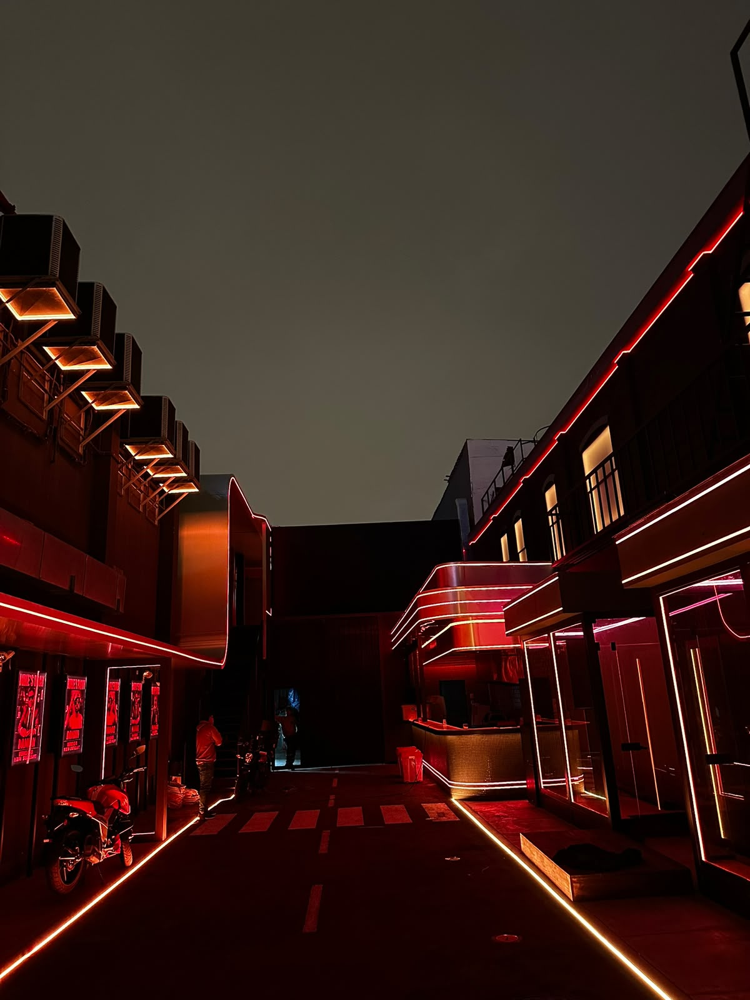
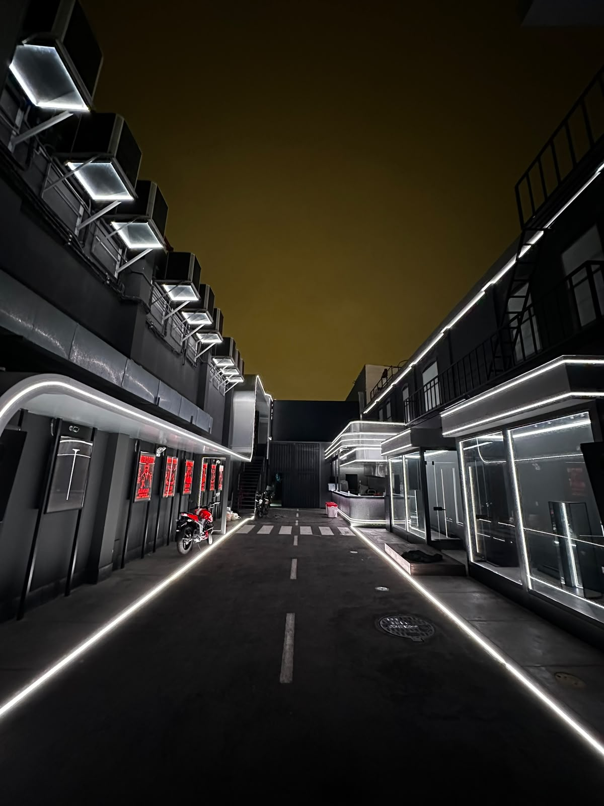

NEÓN FLEX · 24 V · CONCIERTO 3D
Un cielo de luz.
Diez curvas suspendidas.
Un ritmo de luz continua entre las fachadas,
sobre el recorrido del pasaje.
Hard techno · ≈160 BPM · Cambios cada 0,5 s
LA INSTALACIÓN
Una pieza continua.
Repetida diez veces.
Cada tira cruza el pasaje de fachada a fachada, con ambos extremos elevados y una caída suave al centro. Las diez curvas forman una secuencia a lo largo del recorrido.
El pasaje está construido con geometría y materiales propios para cada superficie. Las marquesinas, el bar, los balcones, las vitrinas, los soportes, la moto y el pavimento mantienen su forma al cambiar de cámara. Las fotos originales están abajo como referencia. Las dimensiones y las caras ocultas siguen siendo aproximadas.
Geometría de estudio
AJUSTABLE- Caída al centro
- —
- Altura libre al centro
- —
- Entre primera y última tira
- —
- Longitud de cada curva
- 10,00 m
Medidas referenciales, pendientes de levantamiento.
EL ESPACIO REAL
La arquitectura como punto de partida.
Fotos recibidas · 12 de noviembre de 2026


EDITOR LOCAL · NO PUBLICAR
Guion del concierto
Las medidas del panel de geometría son referenciales. Los cambios de cortes se mantienen durante esta sesión; exporta el JSON para conservarlos.